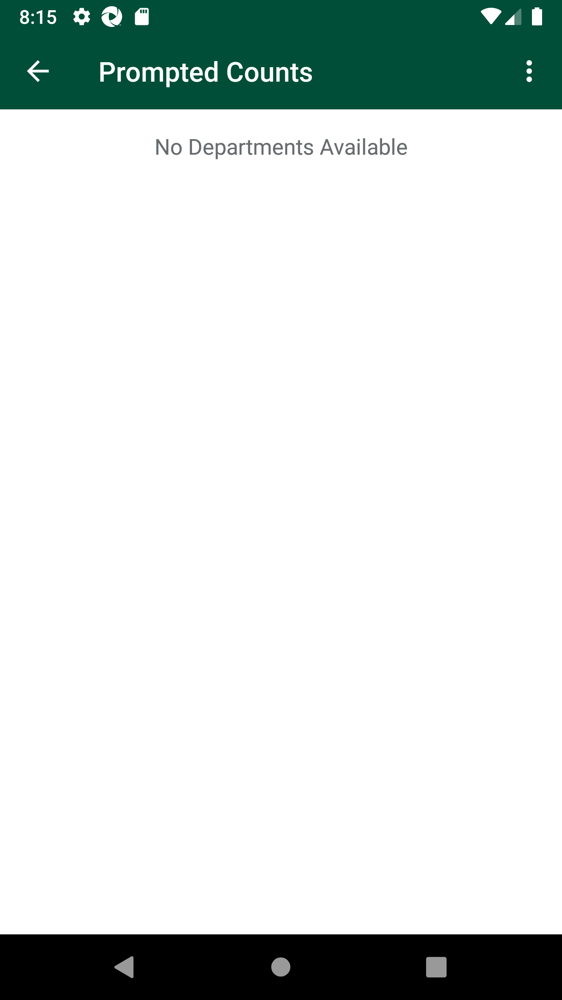
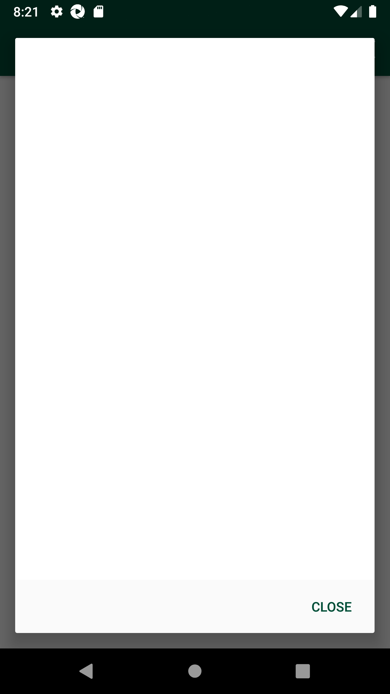
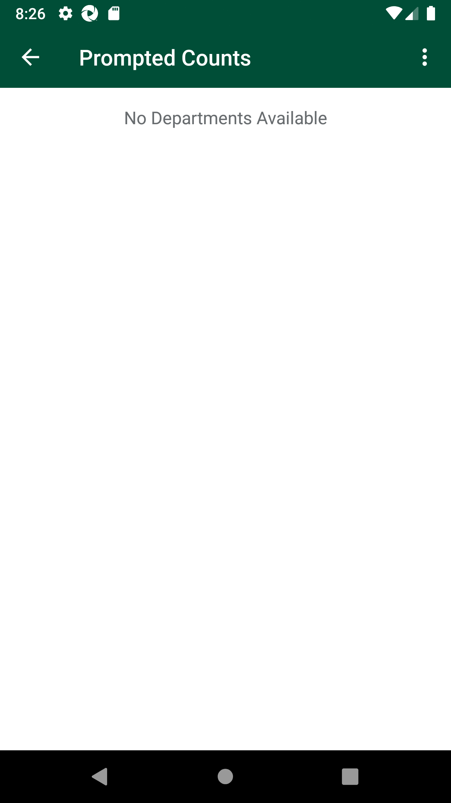
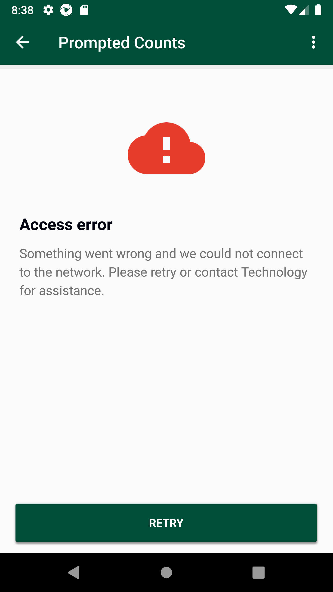
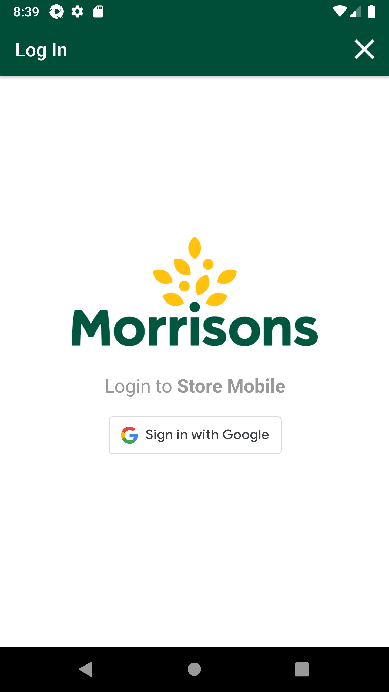

-
Verify Prompted Counts functionality
10:45:52 PM / 01:05:04:592 Fail
Verify Prompted Counts functionality
01.24.2024 10:45:52 PM 01.24.2024 11:50:56 PM 01:05:04:592 · #test-id=1@store_walk @Newprompted_count1 @regressionPassTO CHANGE THE DEVICE TIMINGS AS REQUIREDPassTO CHANGE THE DEVICE TIMINGS AS REQUIREDGiven I send the time "7" and mins "48" and meridiem "am" and current date in listThen I Change timeThen I Change datePassTO CHANGE THE DEVICE TIMINGS AS REQUIREDGiven I send the time "09" and mins "48" and meridiem "am" and current date in listThen I Change timeThen I Change datePassTO CHANGE THE DEVICE TIMINGS AS REQUIREDGiven I send the time "07" and mins "48" and meridiem "am" and current date in listThen I Change timeThen I Change datePassCreate SOH for itemsPassCreate SOH for itemsGiven I create SOH for the Negative Prompt "xxwmm.supplychain.storepromptedcounts.bbwqeegcxl" "promptedcount/pending/" "Input" "nb_prompted_count_getRunTime063915.dat"FailSMA-31447TC_02 Verify user able to voew all locations and departmentsFailSMA-31447TC_02 Verify user able to voew all locations and departmentsWhen I enter Username and Password for SMA Collegue userAnd I click on login button for SMAThen I click on 'stockMngmtText' on page 'HomePagePO_New'Then I click on "Prompted Counts"And I verify "Ambient & Frozen" is displayedcom.morrisons.common.action.Hook.afterScenario(io.cucumber.java.Scenario)And I verify "Fresh" is displayedStep skippedAnd I verify "Market Street" is displayedStep skippedAnd I verify "Services" is displayedStep skippedThen I click on "Ambient & Frozen"Step skippedAnd I verify "Fixture" is displayedStep skippedAnd I verify "Off Shelf" is displayedStep skippedAnd I verify "Petrol" is displayedStep skippedAnd I verify "Warehouse" is displayedStep skippedFailSMA-31447TC_01,06,11,16Verify user able to view Prompt at Location of DepartmentFailSMA-31447TC_01,06,11,16Verify user able to view Prompt at Location of DepartmentWhen I enter Username and Password for SMA Collegue userAnd I click on login button for SMAThen I click on 'stockMngmtText' on page 'HomePagePO_New'Then I click on "Prompted Counts"Then I click on "Ambient & Frozen"com.morrisons.common.action.Hook.afterScenario(io.cucumber.java.Scenario)Then I click on "Fixture"Step skippedAnd I Verify Prompte is displayed at "Fixture"Step skippedFailSMA-31447TC_01,06,11,16Verify user able to view Prompt at Location of DepartmentWhen I enter Username and Password for SMA Collegue userAnd I click on login button for SMAThen I click on 'stockMngmtText' on page 'HomePagePO_New'Then I click on "Prompted Counts"Then I click on "Fresh"com.morrisons.common.action.Hook.afterScenario(io.cucumber.java.Scenario)Then I click on "Fixture"Step skippedAnd I Verify Prompte is displayed at "Fixture"Step skippedFailSMA-31447TC_01,06,11,16Verify user able to view Prompt at Location of DepartmentWhen I enter Username and Password for SMA Collegue userAnd I click on login button for SMAThen I click on 'stockMngmtText' on page 'HomePagePO_New'Then I click on "Prompted Counts"Then I click on "Market Street"com.morrisons.common.action.Hook.afterScenario(io.cucumber.java.Scenario)Then I click on "Fixture"Step skippedAnd I Verify Prompte is displayed at "Fixture"Step skippedFailSMA-31447TC_01,06,11,16Verify user able to view Prompt at Location of DepartmentWhen I enter Username and Password for SMA Collegue userAnd I click on login button for SMAThen I click on 'stockMngmtText' on page 'HomePagePO_New'Then I click on "Prompted Counts"Then I click on "Services"com.morrisons.common.action.Hook.afterScenario(io.cucumber.java.Scenario)Then I click on "Fixture"Step skippedAnd I Verify Prompte is displayed at "Fixture"Step skippedFailSMA-31447TC_02,07,12,17Verify user able to view at Location of Department 'location not completed' message and 'continue' buttonFailSMA-31447TC_02,07,12,17Verify user able to view at Location of Department 'location not completed' message and 'continue' buttonWhen I enter Username and Password for SMA Collegue userAnd I click on login button for SMAThen I click on 'stockMngmtText' on page 'HomePagePO_New'Then I click on "Prompted Counts"Then I click on "Ambient & Frozen"com.morrisons.common.action.Hook.afterScenario(io.cucumber.java.Scenario)Then I click on "Off Shelf"Step skippedAnd I Verify Prompt "Fixture location has not been completed." is displayed at "Off Shelf"Step skippedAnd I view and click on Button "CONTINUE TO FIXTURE"Step skippedAnd I Verify prompted item navigated to "Fixture"Step skippedFailSMA-31447TC_03,08,13,18 Verify user able to view at Location of Department 'location not completed' message and 'continue' buttonFailSMA-31447TC_03,08,13,18 Verify user able to view at Location of Department 'location not completed' message and 'continue' buttonWhen I enter Username and Password for SMA Collegue userAnd I click on login button for SMAThen I click on 'stockMngmtText' on page 'HomePagePO_New'Then I click on "Prompted Counts"Then I click on "Services"com.morrisons.common.action.Hook.afterScenario(io.cucumber.java.Scenario)Then I click on "Petrol"Step skippedAnd I Verify Prompt "Fixture location has not been completed." is displayed at "Petrol"Step skippedAnd I view and click on Button "CONTINUE TO FIXTURE"Step skippedAnd I Verify prompted item navigated to "Fixture"Step skippedFailSMA-31447TC_04,09,14,19Verify user able to view at Location of Department 'location not completed' message and 'continue' buttonFailSMA-31447TC_04,09,14,19Verify user able to view at Location of Department 'location not completed' message and 'continue' buttonWhen I enter Username and Password for SMA Collegue userAnd I click on login button for SMAThen I click on 'stockMngmtText' on page 'HomePagePO_New'Then I click on "Prompted Counts"Then I click on "Ambient & Frozen"com.morrisons.common.action.Hook.afterScenario(io.cucumber.java.Scenario)Then I click on "Warehouse"Step skippedAnd I Verify Prompt "Fixture location has not been completed." is displayed at "Warehouse"Step skippedAnd I view and click on Button "CONTINUE TO FIXTURE"Step skippedAnd I Verify prompted item navigated to "Fixture"Step skippedFailSMA-31447TC_04,09,14,19Verify user able to view at Location of Department 'location not completed' message and 'continue' buttonWhen I enter Username and Password for SMA Collegue userAnd I click on login button for SMAThen I click on 'stockMngmtText' on page 'HomePagePO_New'Then I click on "Prompted Counts"Then I click on "Fresh"com.morrisons.common.action.Hook.afterScenario(io.cucumber.java.Scenario)Then I click on "Warehouse"Step skippedAnd I Verify Prompt "Fixture location has not been completed." is displayed at "Warehouse"Step skippedAnd I view and click on Button "CONTINUE TO FIXTURE"Step skippedAnd I Verify prompted item navigated to "Fixture"Step skippedFailSMA-31447TC_04,09,14,19Verify user able to view at Location of Department 'location not completed' message and 'continue' buttonWhen I enter Username and Password for SMA Collegue userAnd I click on login button for SMAThen I click on 'stockMngmtText' on page 'HomePagePO_New'Then I click on "Prompted Counts"Then I click on "Market Street"com.morrisons.common.action.Hook.afterScenario(io.cucumber.java.Scenario)Then I click on "Warehouse"Step skippedAnd I Verify Prompt "Fixture location has not been completed." is displayed at "Warehouse"Step skippedAnd I view and click on Button "CONTINUE TO FIXTURE"Step skippedAnd I Verify prompted item navigated to "Fixture"Step skippedFailSMA-31447TC_04,09,14,19Verify user able to view at Location of Department 'location not completed' message and 'continue' buttonWhen I enter Username and Password for SMA Collegue userAnd I click on login button for SMAThen I click on 'stockMngmtText' on page 'HomePagePO_New'Then I click on "Prompted Counts"Then I click on "Services"com.morrisons.common.action.Hook.afterScenario(io.cucumber.java.Scenario)Then I click on "Warehouse"Step skippedAnd I Verify Prompt "Fixture location has not been completed." is displayed at "Warehouse"Step skippedAnd I view and click on Button "CONTINUE TO FIXTURE"Step skippedAnd I Verify prompted item navigated to "Fixture"Step skippedFailTC_US31448 Department_Location Verify user should able to view blank history when No item is actioned in Prompted CountFailTC_US31448 Department_Location Verify user should able to view blank history when No item is actioned in Prompted CountWhen I enter Username and Password for SMA Collegue userAnd I click on login button for SMAThen I click on 'stockMngmtText' on page 'HomePagePO_New'Then I click on "Prompted Counts"Then I click on "Ambient & Frozen"com.morrisons.common.action.Hook.afterScenario(io.cucumber.java.Scenario)Then I click on "Fixture"Step skippedAnd I Verify Prompte is displayed at "Fixture"Step skippedThen I click on icon "Show List"Step skippedAnd I see "Fixture History"Step skippedAnd I Verify Prompt "No Items Available" is displayed at "Fixture"Step skippedFailTC_US31448 Department_Location Verify user should able to view blank history when No item is actioned in Prompted CountWhen I enter Username and Password for SMA Collegue userAnd I click on login button for SMAThen I click on 'stockMngmtText' on page 'HomePagePO_New'Then I click on "Prompted Counts"Then I click on "Fresh"com.morrisons.common.action.Hook.afterScenario(io.cucumber.java.Scenario)Then I click on "Fixture"Step skippedAnd I Verify Prompte is displayed at "Fixture"Step skippedThen I click on icon "Show List"Step skippedAnd I see "Fixture History"Step skippedAnd I Verify Prompt "No Items Available" is displayed at "Fixture"Step skippedFailTC_US31448 Department_Location Verify user should able to view blank history when No item is actioned in Prompted CountWhen I enter Username and Password for SMA Collegue userAnd I click on login button for SMAThen I click on 'stockMngmtText' on page 'HomePagePO_New'Then I click on "Prompted Counts"Then I click on "Market Street"com.morrisons.common.action.Hook.afterScenario(io.cucumber.java.Scenario)Then I click on "Fixture"Step skippedAnd I Verify Prompte is displayed at "Fixture"Step skippedThen I click on icon "Show List"Step skippedAnd I see "Fixture History"Step skippedAnd I Verify Prompt "No Items Available" is displayed at "Fixture"Step skippedFailTC_US31448 Department_Location Verify user should able to view blank history when No item is actioned in Prompted CountWhen I enter Username and Password for SMA Collegue userAnd I click on login button for SMAThen I click on 'stockMngmtText' on page 'HomePagePO_New'Then I click on "Prompted Counts"Then I click on "Services"com.morrisons.common.action.Hook.afterScenario(io.cucumber.java.Scenario)Then I click on "Fixture"Step skippedAnd I Verify Prompte is displayed at "Fixture"Step skippedThen I click on icon "Show List"Step skippedAnd I see "Fixture History"Step skippedAnd I Verify Prompt "No Items Available" is displayed at "Fixture"Step skippedFailTC_US31448 Department_Location Verify user should able to view blank history when no item is actioned in Prompted CountFailTC_US31448 Department_Location Verify user should able to view blank history when no item is actioned in Prompted CountWhen I enter Username and Password for SMA Collegue userAnd I click on login button for SMAThen I click on 'stockMngmtText' on page 'HomePagePO_New'Then I click on "Prompted Counts"Then I click on "Ambient & Frozen"com.morrisons.common.action.Hook.afterScenario(io.cucumber.java.Scenario)Then I click on "Off Shelf"Step skippedAnd I Verify Prompt "Fixture location has not been completed." is displayed at "Off Shelf"Step skippedAnd I see "CONTINUE TO FIXTURE"Step skippedThen I click on icon "Show List"Step skippedAnd I see "Off Shelf History"Step skippedAnd I Verify Prompt "No Items Available" is displayed at "Off Shelf"Step skippedFailTC_US31448 Department_Location Verify user should able to view blank history when no item is actioned in Prompted CountWhen I enter Username and Password for SMA Collegue userAnd I click on login button for SMAThen I click on 'stockMngmtText' on page 'HomePagePO_New'Then I click on "Prompted Counts"Then I click on "Ambient & Frozen"com.morrisons.common.action.Hook.afterScenario(io.cucumber.java.Scenario)Then I click on "Warehouse"Step skippedAnd I Verify Prompt "Fixture location has not been completed." is displayed at "Warehouse"Step skippedAnd I see "CONTINUE TO FIXTURE"Step skippedThen I click on icon "Show List"Step skippedAnd I see "Warehouse History"Step skippedAnd I Verify Prompt "No Items Available" is displayed at "Warehouse"Step skippedFailTC_US31448 Department_Location Verify user should able to view blank history when no item is actioned in Prompted CountWhen I enter Username and Password for SMA Collegue userAnd I click on login button for SMAThen I click on 'stockMngmtText' on page 'HomePagePO_New'Then I click on "Prompted Counts"Then I click on "Fresh"com.morrisons.common.action.Hook.afterScenario(io.cucumber.java.Scenario)Then I click on "Warehouse"Step skippedAnd I Verify Prompt "Fixture location has not been completed." is displayed at "Warehouse"Step skippedAnd I see "CONTINUE TO FIXTURE"Step skippedThen I click on icon "Show List"Step skippedAnd I see "Warehouse History"Step skippedAnd I Verify Prompt "No Items Available" is displayed at "Warehouse"Step skippedFailTC_US31448 Department_Location Verify user should able to view blank history when no item is actioned in Prompted CountWhen I enter Username and Password for SMA Collegue userAnd I click on login button for SMAThen I click on 'stockMngmtText' on page 'HomePagePO_New'Then I click on "Prompted Counts"Then I click on "Market Street"com.morrisons.common.action.Hook.afterScenario(io.cucumber.java.Scenario)Then I click on "Warehouse"Step skippedAnd I Verify Prompt "Fixture location has not been completed." is displayed at "Warehouse"Step skippedAnd I see "CONTINUE TO FIXTURE"Step skippedThen I click on icon "Show List"Step skippedAnd I see "Warehouse History"Step skippedAnd I Verify Prompt "No Items Available" is displayed at "Warehouse"Step skippedFailTC_US31448 Department_Location Verify user should able to view blank history when no item is actioned in Prompted CountWhen I enter Username and Password for SMA Collegue userAnd I click on login button for SMAThen I click on 'stockMngmtText' on page 'HomePagePO_New'Then I click on "Prompted Counts"Then I click on "Services"com.morrisons.common.action.Hook.afterScenario(io.cucumber.java.Scenario)
Then I click on "Petrol"Step skippedAnd I Verify Prompt "Fixture location has not been completed." is displayed at "Petrol"Step skippedAnd I see "CONTINUE TO FIXTURE"Step skippedThen I click on icon "Show List"Step skippedAnd I see "Petrol History"Step skippedAnd I Verify Prompt "No Items Available" is displayed at "Petrol"Step skippedFailTC_US31448 Department_Location Verify user should able to view blank history when no item is actioned in Prompted CountWhen I enter Username and Password for SMA Collegue userAnd I click on login button for SMAThen I click on 'stockMngmtText' on page 'HomePagePO_New'Then I click on "Prompted Counts"Then I click on "Services"com.morrisons.common.action.Hook.afterScenario(io.cucumber.java.Scenario)Then I click on "Warehouse"Step skippedAnd I Verify Prompt "Fixture location has not been completed." is displayed at "Warehouse"Step skippedAnd I see "CONTINUE TO FIXTURE"Step skippedThen I click on icon "Show List"Step skippedAnd I see "Warehouse History"Step skippedAnd I Verify Prompt "No Items Available" is displayed at "Warehouse"Step skippedFailTC_US31448 Verify user is allowed to edit from history on completion few items at Location of DepartmentFailTC_US31448 Verify user is allowed to edit from history on completion few items at Location of DepartmentWhen I enter Username and Password for SMA Collegue userAnd I click on login button for SMAThen I click on 'stockMngmtText' on page 'HomePagePO_New'Then I click on "Prompted Counts"Then I click on "Fresh"com.morrisons.common.action.Hook.afterScenario(io.cucumber.java.Scenario)Then I click on "Fixture"Step skippedAnd I enter "10"Step skippedThen I click on the Confirm ButtonStep skippedThen I click on icon "Show List"Step skippedAnd I see "Fixture History"Step skippedAnd I select item from history list to editStep skippedAnd I click on Edit buttonStep skippedAnd I enter "200"Step skippedThen I click on the Confirm ButtonStep skippedAnd I verify "Fixture History" count Updated same as "200"Step skippedFailSMA-31447TC_21,22,23,24Verify user able to complete all prompts at Location for DepartmentFailSMA-31447TC_21,22,23,24Verify user able to complete all prompts at Location for DepartmentWhen I enter Username and Password for SMA Collegue userAnd I click on login button for SMAThen I click on 'stockMngmtText' on page 'HomePagePO_New'Then I click on "Prompted Counts"Then I click on "Ambient & Frozen"com.morrisons.common.action.Hook.afterScenario(io.cucumber.java.Scenario)Then I click on "Fixture"Step skippedAnd I verify Prompt Screen all detailsStep skippedAnd I enter "100"Step skippedAnd I mark product as flagStep skippedAnd I Verify Prompt "You have completed Fixture checks for Ambient & Frozen" is displayed at "Fixture"Step skippedAnd I click on Back ButtonStep skippedAnd I verify status as "COMPLETE"Step skippedFailSMA-31447TC_25,26,27,28 Verify user able to complete all prompts at Location for DepartmentFailSMA-31447TC_25,26,27,28 Verify user able to complete all prompts at Location for DepartmentWhen I enter Username and Password for SMA Collegue userAnd I click on login button for SMAThen I click on 'stockMngmtText' on page 'HomePagePO_New'Then I click on "Prompted Counts"Then I click on "Fresh"com.morrisons.common.action.Hook.afterScenario(io.cucumber.java.Scenario)Then I click on "Fixture"Step skippedAnd I verify Prompt Screen all detailsStep skippedAnd I enter "999"Step skippedThen I click on the Confirm ButtonStep skippedAnd I complete all prompted itemsStep skippedAnd I Verify Prompt "You have completed Fixture checks for Fresh" is displayed at "Fixture"Step skippedAnd I click on Back ButtonStep skippedAnd I verify status as "COMPLETE"Step skippedFailSMA-31447TC_25,26,27,28 Verify user able to complete all prompts at Location for DepartmentWhen I enter Username and Password for SMA Collegue usercom.morrisons.common.action.Hook.afterScenario(io.cucumber.java.Scenario)
And I click on login button for SMAStep skippedThen I click on 'stockMngmtText' on page 'HomePagePO_New'Step skippedThen I click on "Prompted Counts"Step skippedThen I click on "Fresh"Step skippedThen I click on "Warehouse"Step skippedAnd I verify Prompt Screen all detailsStep skippedAnd I enter "999"Step skippedThen I click on the Confirm ButtonStep skippedAnd I complete all prompted itemsStep skippedAnd I Verify Prompt "You have completed Warehouse checks for Fresh" is displayed at "Warehouse"Step skippedAnd I click on Back ButtonStep skippedAnd I verify status as "COMPLETE"Step skippedFailSMA-31447TC_29,30,31,32 Verify user able to complete all prompts at Location for DepartmentFailSMA-31447TC_29,30,31,32 Verify user able to complete all prompts at Location for DepartmentWhen I enter Username and Password for SMA Collegue userAnd I click on login button for SMAThen I click on 'stockMngmtText' on page 'HomePagePO_New'Then I click on "Prompted Counts"Then I click on "Market Street"com.morrisons.common.action.Hook.afterScenario(io.cucumber.java.Scenario)Then I click on "Fixture"Step skippedAnd I verify Prompt Screen all detailsStep skippedAnd I enter "999"Step skippedThen I click on the Confirm ButtonStep skippedAnd I enter "999"Step skippedThen I click on the Confirm ButtonStep skippedAnd I Verify Prompt "You have completed Fixture checks for Market Street" is displayed at "Fixture"Step skippedAnd I click on Back ButtonStep skippedAnd I verify status as "COMPLETE"Step skippedFailSMA-31447TC_29,30,31,32 Verify user able to complete all prompts at Location for DepartmentWhen I enter Username and Password for SMA Collegue userAnd I click on login button for SMAThen I click on 'stockMngmtText' on page 'HomePagePO_New'Then I click on "Prompted Counts"Then I click on "Market Street"com.morrisons.common.action.Hook.afterScenario(io.cucumber.java.Scenario)Then I click on "Warehouse"Step skippedAnd I verify Prompt Screen all detailsStep skippedAnd I enter "999"Step skippedThen I click on the Confirm ButtonStep skippedAnd I enter "999"Step skippedThen I click on the Confirm ButtonStep skippedAnd I Verify Prompt "You have completed Warehouse checks for Market Street" is displayed at "Warehouse"Step skippedAnd I click on Back ButtonStep skippedAnd I verify status as "COMPLETE"Step skippedFailSMA-31447TC_33,34,35,36 Verify user able to flag all prompts at Location for DepartmentFailSMA-31447TC_33,34,35,36 Verify user able to flag all prompts at Location for DepartmentWhen I enter Username and Password for SMA Collegue userAnd I click on login button for SMAThen I click on 'stockMngmtText' on page 'HomePagePO_New'Then I click on "Prompted Counts"Then I click on "Services"com.morrisons.common.action.Hook.afterScenario(io.cucumber.java.Scenario)Then I click on "Fixture"Step skippedAnd I mark product as flagStep skippedAnd I Verify Prompt "You have completed Fixture checks for Services" is displayed at "Fixture"Step skippedAnd I click on Back ButtonStep skippedAnd I verify status as "COMPLETE"Step skippedFailSMA31446 TC_02 Department_Location Verify user is allow to edit any prompted item by updating stock counts or adding actionFailSMA31446 TC_02 Department_Location Verify user is allow to edit any prompted item by updating stock counts or adding actionWhen I enter Username and Password for SMA Collegue userAnd I click on login button for SMAThen I click on 'stockMngmtText' on page 'HomePagePO_New'Then I click on "Prompted Counts"Then I click on "Fresh"com.morrisons.common.action.Hook.afterScenario(io.cucumber.java.Scenario)
Then I click on "Fixture"Step skippedThen I click on "REVIEW & EDIT"Step skippedAnd I verify edit is allowed by updating Stock "920" at "Fixture"Step skippedFailSMA31446 TC_02 Department_Location Verify user is allow to edit any prompted item by updating stock counts or adding actionWhen I enter Username and Password for SMA Collegue userAnd I click on login button for SMAThen I click on 'stockMngmtText' on page 'HomePagePO_New'Then I click on "Prompted Counts"Then I click on "Market Street"com.morrisons.common.action.Hook.afterScenario(io.cucumber.java.Scenario)Then I click on "Fixture"Step skippedThen I click on "REVIEW & EDIT"Step skippedAnd I verify edit is allowed by updating Stock "920" at "Fixture"Step skippedFailSMA31446 TC_03 Department_Location Verify user unflagged items should be allowed to update count or action from REVIEW & EDIT screenFailSMA31446 TC_03 Department_Location Verify user unflagged items should be allowed to update count or action from REVIEW & EDIT screenWhen I enter Username and Password for SMA Collegue userAnd I click on login button for SMAThen I click on 'stockMngmtText' on page 'HomePagePO_New'Then I click on "Prompted Counts"Then I click on "Fresh"com.morrisons.common.action.Hook.afterScenario(io.cucumber.java.Scenario)Then I click on "Fixture"Step skippedThen I click on "REVIEW & EDIT"Step skippedAnd I verify unflagged items allowed to update count or actionStep skippedFailSMA31446 TC_03 Department_Location Verify user unflagged items should be allowed to update count or action from REVIEW & EDIT screenWhen I enter Username and Password for SMA Collegue userAnd I click on login button for SMAThen I click on 'stockMngmtText' on page 'HomePagePO_New'Then I click on "Prompted Counts"Then I click on "Market Street"com.morrisons.common.action.Hook.afterScenario(io.cucumber.java.Scenario)Then I click on "Fixture"Step skippedThen I click on "REVIEW & EDIT"Step skippedAnd I verify unflagged items allowed to update count or actionStep skippedFailSMA31446 TC_04 Department_Location Verify user Flagged items are allowed add action with reflagging in REVIEW & EDIT screenFailSMA31446 TC_04 Department_Location Verify user Flagged items are allowed add action with reflagging in REVIEW & EDIT screenWhen I enter Username and Password for SMA Collegue userAnd I click on login button for SMAThen I click on 'stockMngmtText' on page 'HomePagePO_New'Then I click on "Prompted Counts"Then I click on "Services"com.morrisons.common.action.Hook.afterScenario(io.cucumber.java.Scenario)Then I click on "Fixture"Step skippedThen I click on "REVIEW & EDIT"Step skippedAnd I verify flagged items are allowed to add action with reflaggingStep skippedFailSMA31446 TC_04 Department_Location Verify user Flagged items are allowed add action with reflagging in REVIEW & EDIT screenWhen I enter Username and Password for SMA Collegue userAnd I click on login button for SMAThen I click on 'stockMngmtText' on page 'HomePagePO_New'Then I click on "Prompted Counts"Then I click on "Services"com.morrisons.common.action.Hook.afterScenario(io.cucumber.java.Scenario)Then I click on "Warehouse"Step skippedThen I click on "REVIEW & EDIT"Step skippedAnd I verify flagged items are allowed to add action with reflaggingStep skippedFailSMA31440TC_01 Location Verify user Able to view Summary tab throughout the day irrespective of timeFailSMA31440TC_01 Location Verify user Able to view Summary tab throughout the day irrespective of timeWhen I enter Username and Password for SMA Collegue userAnd I click on login button for SMAThen I click on 'stockMngmtText' on page 'HomePagePO_New'Then I click on "Prompted Counts"And I verify "Summary" is displayedcom.morrisons.common.action.Hook.afterScenario(io.cucumber.java.Scenario)FailSMA31440TC_02 Location Verify user Able to view "Total Approvals" tab with total count of approvalsFailSMA31440TC_02 Location Verify user Able to view "Total Approvals" tab with total count of approvalsWhen I enter Username and Password for SMA Collegue userAnd I click on login button for SMAThen I click on 'stockMngmtText' on page 'HomePagePO_New'Then I click on "Prompted Counts"And I verify "Summary" is displayedcom.morrisons.common.action.Hook.afterScenario(io.cucumber.java.Scenario)Then I click on "Summary"Step skippedAnd I verify Summary screen UIStep skippedAnd I verify "Total Approvals" is displayedStep skippedFailSMA31440TC_03 Location Verify user Able to view department list with its outstanding count i.e., 1 of 2 (Amber colour), 2 of 2 (Green Colour)FailSMA31440TC_03 Location Verify user Able to view department list with its outstanding count i.e., 1 of 2 (Amber colour), 2 of 2 (Green Colour)When I enter Username and Password for SMA Collegue userAnd I click on login button for SMAThen I click on 'stockMngmtText' on page 'HomePagePO_New'Then I click on "Prompted Counts"And I verify Location is displayedStep undefinedThen I click on "Summary"Step skippedAnd I verify Summary screen UIStep skippedAnd I view and click on Button "Total Approvals"Step skippedAnd I verify Department list of outstanding count is displayedStep skippedFailSMA31440TC_04 Location Verify user Able to view total items list count at the top which needs manager approvalFailSMA31440TC_04 Location Verify user Able to view total items list count at the top which needs manager approvalWhen I enter Username and Password for SMA Manager userAnd I click on login button for SMAThen I click on 'stockMngmtText' on page 'HomePagePO_New'Then I click on "Prompted Counts"And I verify "Summary" is displayedcom.morrisons.common.action.Hook.afterScenario(io.cucumber.java.Scenario)Then I click on "Summary"Step skippedAnd I verify Summary screen UIStep skippedAnd I view and click on Button "Total Approvals"Step skippedAnd I verify Department list of outstanding count is displayedStep skippedFailSMA31440TC_05 Location Verify user Able to view list of prompted items which requires manager approval i.e. Adjustment value>=200 poundsFailSMA31440TC_05 Location Verify user Able to view list of prompted items which requires manager approval i.e. Adjustment value>=200 poundsWhen I enter Username and Password for SMA Manager userAnd I click on login button for SMAThen I click on 'stockMngmtText' on page 'HomePagePO_New'Then I click on "Prompted Counts"And I verify "Summary" is displayedcom.morrisons.common.action.Hook.afterScenario(io.cucumber.java.Scenario)
Then I click on "Summary"Step skippedAnd I verify Summary screen UIStep skippedAnd I view and click on Button "Total Approvals"Step skippedAnd I verify Department list of outstanding count is displayedStep skippedThen I click on "Market Street"Step skippedAnd I verify item which need manager approvalsStep skippedFailSMA31440TC_06 Location Verify user Able to approve prompted item from the listFailSMA31440TC_06 Location Verify user Able to approve prompted item from the listcom.morrisons.common.action.Hook.smaBefore()When I enter Username and Password for SMA Manager userStep skippedAnd I click on login button for SMAStep skippedThen I click on 'stockMngmtText' on page 'HomePagePO_New'Step skippedThen I click on "Prompted Counts"Step skippedAnd I verify "Summary" is displayedStep skippedThen I click on "Summary"Step skippedAnd I verify Summary screen UIStep skippedAnd I view and click on Button "Total Approvals"Step skippedAnd I verify Department list of outstanding count is displayedStep skippedThen I click on "Fresh"Step skippedAnd I verify item which need manager approvalsStep skippedAnd I select and Approve prompted item from listStep skippedFailSMA31440TC_07 Location Verify user Allow to edit count at any location before approvalFailSMA31440TC_07 Location Verify user Allow to edit count at any location before approvalWhen I enter Username and Password for SMA Manager usercom.morrisons.common.action.Hook.afterScenario(io.cucumber.java.Scenario)
And I click on login button for SMAStep skippedThen I click on 'stockMngmtText' on page 'HomePagePO_New'Step skippedThen I click on "Prompted Counts"Step skippedAnd I verify "Summary" is displayedStep skippedThen I click on "Summary"Step skippedAnd I verify Summary screen UIStep skippedAnd I view and click on Button "Total Approvals"Step skippedAnd I verify Department list of outstanding count is displayedStep skippedThen I click on "Market Street"Step skippedAnd I verify item which need manager approvalsStep skippedAnd I edit count of any "Fixture" before approvalStep skippedFailSMA31440TC_09 Location Verify user Able to view the approved items at the bottom after approvalFailSMA31440TC_09 Location Verify user Able to view the approved items at the bottom after approvalWhen I enter Username and Password for SMA Collegue userAnd I click on login button for SMAThen I click on 'stockMngmtText' on page 'HomePagePO_New'Then I click on "Prompted Counts"And I verify "Summary" is displayedcom.morrisons.common.action.Hook.afterScenario(io.cucumber.java.Scenario)Then I click on "Summary"Step skippedAnd I verify Summary screen UIStep skippedAnd I view and click on Button "Total Approvals"Step skippedAnd I verify Department list of outstanding count is displayedStep skippedThen I click on "Fresh"Step skippedAnd I verify approved items displayedStep skippedFailSMA31440TC_11 Location Verify After 9.45AM item details display in View ModeFailSMA31440TC_11 Location Verify After 9.45AM item details display in View ModeWhen I enter Username and Password for SMA Manager userAnd I click on login button for SMAThen I click on 'stockMngmtText' on page 'HomePagePO_New'Then I click on "Prompted Counts"And I verify "Summary" is displayedcom.morrisons.common.action.Hook.afterScenario(io.cucumber.java.Scenario)Then I click on "Summary"Step skippedAnd I verify Summary screen UIStep skippedAnd I view and click on Button "Total Approvals"Step skippedAnd I verify Department list of outstanding count is displayedStep skippedThen I click on "Fresh"Step skippedAnd I verify item details display in View ModeStep skippedFailSMA31437TC_01Verify Summary Card details for Department_Location department level reviewFailSMA31437TC_01Verify Summary Card details for Department_Location department level reviewWhen I enter Username and Password for SMA Collegue userAnd I click on login button for SMAThen I click on 'stockMngmtText' on page 'HomePagePO_New'Then I click on "Prompted Counts"And I verify "Summary" is displayedcom.morrisons.common.action.Hook.afterScenario(io.cucumber.java.Scenario)Then I click on "Summary"Step skippedAnd I verify Summary screen UIStep skippedThen I select Summary Card for "Fresh"Step skippedAnd I verify all the list of products with Total count at the top of the screenStep skippedAnd I verify product list item description, MIN, Stock count, Adjustment valueStep skippedAnd I verify Adjustment value calculation agaist current stock and updated countStep skippedAnd I verify updated Adjustment back on main screen after count is updated at department levelStep skipped
-
org.openqa.selenium.NoSuchSessionException
1 tests
org.openqa.selenium.NoSuchSessionException
1 failedStatus Timestamp TestName Fail 23:40:42 PM When I enter Username and Password for SMA Manager user Verify Prompted Counts functionality.SMA31440TC_07 Location Verify user Allow to edit count at any location before approval.When I enter Username and Password for SMA Manager user -
org.openqa.selenium.NoSuchElementException
40 tests
org.openqa.selenium.NoSuchElementException
40 failedStatus Timestamp TestName Fail 22:49:10 PM And I verify "Ambient & Frozen" is displayed Verify Prompted Counts functionality.SMA-31447TC_02 Verify user able to voew all locations and departments.And I verify "Ambient & Frozen" is displayedFail 22:50:09 PM Then I click on "Ambient & Frozen" Verify Prompted Counts functionality.SMA-31447TC_01,06,11,16Verify user able to view Prompt at Location of Department.Then I click on "Ambient & Frozen"Fail 22:51:29 PM Then I click on "Fresh" Verify Prompted Counts functionality.SMA-31447TC_01,06,11,16Verify user able to view Prompt at Location of Department.Then I click on "Fresh"Fail 22:52:48 PM Then I click on "Market Street" Verify Prompted Counts functionality.SMA-31447TC_01,06,11,16Verify user able to view Prompt at Location of Department.Then I click on "Market Street"Fail 22:54:09 PM Then I click on "Services" Verify Prompted Counts functionality.SMA-31447TC_01,06,11,16Verify user able to view Prompt at Location of Department.Then I click on "Services"Fail 22:55:28 PM Then I click on "Ambient & Frozen" Verify Prompted Counts functionality.SMA-31447TC_02,07,12,17Verify user able to view at Location of Department 'location not completed' message and 'continue' button.Then I click on "Ambient & Frozen"Fail 22:56:46 PM Then I click on "Services" Verify Prompted Counts functionality.SMA-31447TC_03,08,13,18 Verify user able to view at Location of Department 'location not completed' message and 'continue' button.Then I click on "Services"Fail 22:58:04 PM Then I click on "Ambient & Frozen" Verify Prompted Counts functionality.SMA-31447TC_04,09,14,19Verify user able to view at Location of Department 'location not completed' message and 'continue' button.Then I click on "Ambient & Frozen"Fail 22:59:24 PM Then I click on "Fresh" Verify Prompted Counts functionality.SMA-31447TC_04,09,14,19Verify user able to view at Location of Department 'location not completed' message and 'continue' button.Then I click on "Fresh"Fail 23:00:43 PM Then I click on "Market Street" Verify Prompted Counts functionality.SMA-31447TC_04,09,14,19Verify user able to view at Location of Department 'location not completed' message and 'continue' button.Then I click on "Market Street"Fail 23:02:02 PM Then I click on "Services" Verify Prompted Counts functionality.SMA-31447TC_04,09,14,19Verify user able to view at Location of Department 'location not completed' message and 'continue' button.Then I click on "Services"Fail 23:03:20 PM Then I click on "Ambient & Frozen" Verify Prompted Counts functionality.TC_US31448 Department_Location Verify user should able to view blank history when No item is actioned in Prompted Count.Then I click on "Ambient & Frozen"Fail 23:04:39 PM Then I click on "Fresh" Verify Prompted Counts functionality.TC_US31448 Department_Location Verify user should able to view blank history when No item is actioned in Prompted Count.Then I click on "Fresh"Fail 23:05:58 PM Then I click on "Market Street" Verify Prompted Counts functionality.TC_US31448 Department_Location Verify user should able to view blank history when No item is actioned in Prompted Count.Then I click on "Market Street"Fail 23:07:17 PM Then I click on "Services" Verify Prompted Counts functionality.TC_US31448 Department_Location Verify user should able to view blank history when No item is actioned in Prompted Count.Then I click on "Services"Fail 23:08:36 PM Then I click on "Ambient & Frozen" Verify Prompted Counts functionality.TC_US31448 Department_Location Verify user should able to view blank history when no item is actioned in Prompted Count.Then I click on "Ambient & Frozen"Fail 23:09:56 PM Then I click on "Ambient & Frozen" Verify Prompted Counts functionality.TC_US31448 Department_Location Verify user should able to view blank history when no item is actioned in Prompted Count.Then I click on "Ambient & Frozen"Fail 23:11:19 PM Then I click on "Fresh" Verify Prompted Counts functionality.TC_US31448 Department_Location Verify user should able to view blank history when no item is actioned in Prompted Count.Then I click on "Fresh"Fail 23:12:43 PM Then I click on "Market Street" Verify Prompted Counts functionality.TC_US31448 Department_Location Verify user should able to view blank history when no item is actioned in Prompted Count.Then I click on "Market Street"Fail 23:14:02 PM Then I click on "Services" Verify Prompted Counts functionality.TC_US31448 Department_Location Verify user should able to view blank history when no item is actioned in Prompted Count.Then I click on "Services"Fail 23:15:21 PM Then I click on "Services" Verify Prompted Counts functionality.TC_US31448 Department_Location Verify user should able to view blank history when no item is actioned in Prompted Count.Then I click on "Services"Fail 23:16:46 PM Then I click on "Fresh" Verify Prompted Counts functionality.TC_US31448 Verify user is allowed to edit from history on completion few items at Location of Department.Then I click on "Fresh"Fail 23:18:00 PM Then I click on "Ambient & Frozen" Verify Prompted Counts functionality.SMA-31447TC_21,22,23,24Verify user able to complete all prompts at Location for Department.Then I click on "Ambient & Frozen"Fail 23:19:13 PM Then I click on "Fresh" Verify Prompted Counts functionality.SMA-31447TC_25,26,27,28 Verify user able to complete all prompts at Location for Department.Then I click on "Fresh"Fail 23:21:28 PM Then I click on "Market Street" Verify Prompted Counts functionality.SMA-31447TC_29,30,31,32 Verify user able to complete all prompts at Location for Department.Then I click on "Market Street"Fail 23:22:44 PM Then I click on "Market Street" Verify Prompted Counts functionality.SMA-31447TC_29,30,31,32 Verify user able to complete all prompts at Location for Department.Then I click on "Market Street"Fail 23:23:58 PM Then I click on "Services" Verify Prompted Counts functionality.SMA-31447TC_33,34,35,36 Verify user able to flag all prompts at Location for Department.Then I click on "Services"Fail 23:25:11 PM Then I click on "Fresh" Verify Prompted Counts functionality.SMA31446 TC_02 Department_Location Verify user is allow to edit any prompted item by updating stock counts or adding action.Then I click on "Fresh"Fail 23:26:26 PM Then I click on "Market Street" Verify Prompted Counts functionality.SMA31446 TC_02 Department_Location Verify user is allow to edit any prompted item by updating stock counts or adding action.Then I click on "Market Street"Fail 23:27:41 PM Then I click on "Fresh" Verify Prompted Counts functionality.SMA31446 TC_03 Department_Location Verify user unflagged items should be allowed to update count or action from REVIEW & EDIT screen.Then I click on "Fresh"Fail 23:28:58 PM Then I click on "Market Street" Verify Prompted Counts functionality.SMA31446 TC_03 Department_Location Verify user unflagged items should be allowed to update count or action from REVIEW & EDIT screen.Then I click on "Market Street"Fail 23:30:13 PM Then I click on "Services" Verify Prompted Counts functionality.SMA31446 TC_04 Department_Location Verify user Flagged items are allowed add action with reflagging in REVIEW & EDIT screen.Then I click on "Services"Fail 23:31:28 PM Then I click on "Services" Verify Prompted Counts functionality.SMA31446 TC_04 Department_Location Verify user Flagged items are allowed add action with reflagging in REVIEW & EDIT screen.Then I click on "Services"Fail 23:32:45 PM And I verify "Summary" is displayed Verify Prompted Counts functionality.SMA31440TC_01 Location Verify user Able to view Summary tab throughout the day irrespective of time.And I verify "Summary" is displayedFail 23:33:43 PM And I verify "Summary" is displayed Verify Prompted Counts functionality.SMA31440TC_02 Location Verify user Able to view "Total Approvals" tab with total count of approvals.And I verify "Summary" is displayedFail 23:36:12 PM And I verify "Summary" is displayed Verify Prompted Counts functionality.SMA31440TC_04 Location Verify user Able to view total items list count at the top which needs manager approval.And I verify "Summary" is displayedFail 23:38:04 PM And I verify "Summary" is displayed Verify Prompted Counts functionality.SMA31440TC_05 Location Verify user Able to view list of prompted items which requires manager approval i.e. Adjustment value>=200 pounds.And I verify "Summary" is displayedFail 23:42:26 PM And I verify "Summary" is displayed Verify Prompted Counts functionality.SMA31440TC_09 Location Verify user Able to view the approved items at the bottom after approval.And I verify "Summary" is displayedFail 23:46:29 PM And I verify "Summary" is displayed Verify Prompted Counts functionality.SMA31440TC_11 Location Verify After 9.45AM item details display in View Mode.And I verify "Summary" is displayedFail 23:50:36 PM And I verify "Summary" is displayed Verify Prompted Counts functionality.SMA31437TC_01Verify Summary Card details for Department_Location department level review.And I verify "Summary" is displayed -
org.openqa.selenium.WebDriverException
2 tests
org.openqa.selenium.WebDriverException
2 failedStatus Timestamp TestName Fail 23:20:06 PM When I enter Username and Password for SMA Collegue user Verify Prompted Counts functionality.SMA-31447TC_25,26,27,28 Verify user able to complete all prompts at Location for Department.When I enter Username and Password for SMA Collegue userFail 23:38:26 PM com.morrisons.common.action.Hook.smaBefore() Verify Prompted Counts functionality.SMA31440TC_06 Location Verify user Able to approve prompted item from the list.com.morrisons.common.action.Hook.smaBefore()
-
@store_walk
49 tests
@store_walk
4 passed 45 failedStatus Timestamp TestName Fail 22:45:52 PM Verify Prompted Counts functionality Pass 22:45:52 PM TO CHANGE THE DEVICE TIMINGS AS REQUIRED Verify Prompted Counts functionality.TO CHANGE THE DEVICE TIMINGS AS REQUIREDPass 22:48:02 PM Create SOH for items Verify Prompted Counts functionality.Create SOH for itemsFail 22:48:26 PM SMA-31447TC_02 Verify user able to voew all locations and departments Verify Prompted Counts functionality.SMA-31447TC_02 Verify user able to voew all locations and departmentsFail 22:49:33 PM SMA-31447TC_01,06,11,16Verify user able to view Prompt at Location of Department Verify Prompted Counts functionality.SMA-31447TC_01,06,11,16Verify user able to view Prompt at Location of DepartmentFail 22:50:52 PM SMA-31447TC_01,06,11,16Verify user able to view Prompt at Location of Department Verify Prompted Counts functionality.SMA-31447TC_01,06,11,16Verify user able to view Prompt at Location of DepartmentFail 22:52:12 PM SMA-31447TC_01,06,11,16Verify user able to view Prompt at Location of Department Verify Prompted Counts functionality.SMA-31447TC_01,06,11,16Verify user able to view Prompt at Location of DepartmentFail 22:53:31 PM SMA-31447TC_01,06,11,16Verify user able to view Prompt at Location of Department Verify Prompted Counts functionality.SMA-31447TC_01,06,11,16Verify user able to view Prompt at Location of DepartmentFail 22:54:51 PM SMA-31447TC_02,07,12,17Verify user able to view at Location of Department 'location not completed' message and 'continue' button Verify Prompted Counts functionality.SMA-31447TC_02,07,12,17Verify user able to view at Location of Department 'location not completed' message and 'continue' buttonFail 22:56:10 PM SMA-31447TC_03,08,13,18 Verify user able to view at Location of Department 'location not completed' message and 'continue' button Verify Prompted Counts functionality.SMA-31447TC_03,08,13,18 Verify user able to view at Location of Department 'location not completed' message and 'continue' buttonFail 22:57:29 PM SMA-31447TC_04,09,14,19Verify user able to view at Location of Department 'location not completed' message and 'continue' button Verify Prompted Counts functionality.SMA-31447TC_04,09,14,19Verify user able to view at Location of Department 'location not completed' message and 'continue' buttonFail 22:58:47 PM SMA-31447TC_04,09,14,19Verify user able to view at Location of Department 'location not completed' message and 'continue' button Verify Prompted Counts functionality.SMA-31447TC_04,09,14,19Verify user able to view at Location of Department 'location not completed' message and 'continue' buttonFail 23:00:06 PM SMA-31447TC_04,09,14,19Verify user able to view at Location of Department 'location not completed' message and 'continue' button Verify Prompted Counts functionality.SMA-31447TC_04,09,14,19Verify user able to view at Location of Department 'location not completed' message and 'continue' buttonFail 23:01:26 PM SMA-31447TC_04,09,14,19Verify user able to view at Location of Department 'location not completed' message and 'continue' button Verify Prompted Counts functionality.SMA-31447TC_04,09,14,19Verify user able to view at Location of Department 'location not completed' message and 'continue' buttonFail 23:02:44 PM TC_US31448 Department_Location Verify user should able to view blank history when No item is actioned in Prompted Count Verify Prompted Counts functionality.TC_US31448 Department_Location Verify user should able to view blank history when No item is actioned in Prompted CountFail 23:04:02 PM TC_US31448 Department_Location Verify user should able to view blank history when No item is actioned in Prompted Count Verify Prompted Counts functionality.TC_US31448 Department_Location Verify user should able to view blank history when No item is actioned in Prompted CountFail 23:05:21 PM TC_US31448 Department_Location Verify user should able to view blank history when No item is actioned in Prompted Count Verify Prompted Counts functionality.TC_US31448 Department_Location Verify user should able to view blank history when No item is actioned in Prompted CountFail 23:06:40 PM TC_US31448 Department_Location Verify user should able to view blank history when No item is actioned in Prompted Count Verify Prompted Counts functionality.TC_US31448 Department_Location Verify user should able to view blank history when No item is actioned in Prompted CountFail 23:08:00 PM TC_US31448 Department_Location Verify user should able to view blank history when no item is actioned in Prompted Count Verify Prompted Counts functionality.TC_US31448 Department_Location Verify user should able to view blank history when no item is actioned in Prompted CountFail 23:09:19 PM TC_US31448 Department_Location Verify user should able to view blank history when no item is actioned in Prompted Count Verify Prompted Counts functionality.TC_US31448 Department_Location Verify user should able to view blank history when no item is actioned in Prompted CountFail 23:10:40 PM TC_US31448 Department_Location Verify user should able to view blank history when no item is actioned in Prompted Count Verify Prompted Counts functionality.TC_US31448 Department_Location Verify user should able to view blank history when no item is actioned in Prompted CountFail 23:12:03 PM TC_US31448 Department_Location Verify user should able to view blank history when no item is actioned in Prompted Count Verify Prompted Counts functionality.TC_US31448 Department_Location Verify user should able to view blank history when no item is actioned in Prompted CountFail 23:13:25 PM TC_US31448 Department_Location Verify user should able to view blank history when no item is actioned in Prompted Count Verify Prompted Counts functionality.TC_US31448 Department_Location Verify user should able to view blank history when no item is actioned in Prompted CountFail 23:14:44 PM TC_US31448 Department_Location Verify user should able to view blank history when no item is actioned in Prompted Count Verify Prompted Counts functionality.TC_US31448 Department_Location Verify user should able to view blank history when no item is actioned in Prompted CountFail 23:16:05 PM TC_US31448 Verify user is allowed to edit from history on completion few items at Location of Department Verify Prompted Counts functionality.TC_US31448 Verify user is allowed to edit from history on completion few items at Location of DepartmentFail 23:17:28 PM SMA-31447TC_21,22,23,24Verify user able to complete all prompts at Location for Department Verify Prompted Counts functionality.SMA-31447TC_21,22,23,24Verify user able to complete all prompts at Location for DepartmentFail 23:18:42 PM SMA-31447TC_25,26,27,28 Verify user able to complete all prompts at Location for Department Verify Prompted Counts functionality.SMA-31447TC_25,26,27,28 Verify user able to complete all prompts at Location for DepartmentFail 23:19:55 PM SMA-31447TC_25,26,27,28 Verify user able to complete all prompts at Location for Department Verify Prompted Counts functionality.SMA-31447TC_25,26,27,28 Verify user able to complete all prompts at Location for DepartmentFail 23:20:56 PM SMA-31447TC_29,30,31,32 Verify user able to complete all prompts at Location for Department Verify Prompted Counts functionality.SMA-31447TC_29,30,31,32 Verify user able to complete all prompts at Location for DepartmentFail 23:22:09 PM SMA-31447TC_29,30,31,32 Verify user able to complete all prompts at Location for Department Verify Prompted Counts functionality.SMA-31447TC_29,30,31,32 Verify user able to complete all prompts at Location for DepartmentFail 23:23:26 PM SMA-31447TC_33,34,35,36 Verify user able to flag all prompts at Location for Department Verify Prompted Counts functionality.SMA-31447TC_33,34,35,36 Verify user able to flag all prompts at Location for DepartmentFail 23:24:40 PM SMA31446 TC_02 Department_Location Verify user is allow to edit any prompted item by updating stock counts or adding action Verify Prompted Counts functionality.SMA31446 TC_02 Department_Location Verify user is allow to edit any prompted item by updating stock counts or adding actionFail 23:25:54 PM SMA31446 TC_02 Department_Location Verify user is allow to edit any prompted item by updating stock counts or adding action Verify Prompted Counts functionality.SMA31446 TC_02 Department_Location Verify user is allow to edit any prompted item by updating stock counts or adding actionFail 23:27:08 PM SMA31446 TC_03 Department_Location Verify user unflagged items should be allowed to update count or action from REVIEW & EDIT screen Verify Prompted Counts functionality.SMA31446 TC_03 Department_Location Verify user unflagged items should be allowed to update count or action from REVIEW & EDIT screenFail 23:28:23 PM SMA31446 TC_03 Department_Location Verify user unflagged items should be allowed to update count or action from REVIEW & EDIT screen Verify Prompted Counts functionality.SMA31446 TC_03 Department_Location Verify user unflagged items should be allowed to update count or action from REVIEW & EDIT screenFail 23:29:40 PM SMA31446 TC_04 Department_Location Verify user Flagged items are allowed add action with reflagging in REVIEW & EDIT screen Verify Prompted Counts functionality.SMA31446 TC_04 Department_Location Verify user Flagged items are allowed add action with reflagging in REVIEW & EDIT screenFail 23:30:55 PM SMA31446 TC_04 Department_Location Verify user Flagged items are allowed add action with reflagging in REVIEW & EDIT screen Verify Prompted Counts functionality.SMA31446 TC_04 Department_Location Verify user Flagged items are allowed add action with reflagging in REVIEW & EDIT screenFail 23:32:10 PM SMA31440TC_01 Location Verify user Able to view Summary tab throughout the day irrespective of time Verify Prompted Counts functionality.SMA31440TC_01 Location Verify user Able to view Summary tab throughout the day irrespective of timeFail 23:33:08 PM SMA31440TC_02 Location Verify user Able to view "Total Approvals" tab with total count of approvals Verify Prompted Counts functionality.SMA31440TC_02 Location Verify user Able to view "Total Approvals" tab with total count of approvalsFail 23:34:06 PM SMA31440TC_03 Location Verify user Able to view department list with its outstanding count i.e., 1 of 2 (Amber colour), 2 of 2 (Green Colour) Verify Prompted Counts functionality.SMA31440TC_03 Location Verify user Able to view department list with its outstanding count i.e., 1 of 2 (Amber colour), 2 of 2 (Green Colour)Fail 23:34:42 PM SMA31440TC_04 Location Verify user Able to view total items list count at the top which needs manager approval Verify Prompted Counts functionality.SMA31440TC_04 Location Verify user Able to view total items list count at the top which needs manager approvalFail 23:36:34 PM SMA31440TC_05 Location Verify user Able to view list of prompted items which requires manager approval i.e. Adjustment value>=200 pounds Verify Prompted Counts functionality.SMA31440TC_05 Location Verify user Able to view list of prompted items which requires manager approval i.e. Adjustment value>=200 poundsFail 23:38:26 PM SMA31440TC_06 Location Verify user Able to approve prompted item from the list Verify Prompted Counts functionality.SMA31440TC_06 Location Verify user Able to approve prompted item from the listFail 23:40:31 PM SMA31440TC_07 Location Verify user Allow to edit count at any location before approval Verify Prompted Counts functionality.SMA31440TC_07 Location Verify user Allow to edit count at any location before approvalFail 23:40:52 PM SMA31440TC_09 Location Verify user Able to view the approved items at the bottom after approval Verify Prompted Counts functionality.SMA31440TC_09 Location Verify user Able to view the approved items at the bottom after approvalPass 23:42:48 PM TO CHANGE THE DEVICE TIMINGS AS REQUIRED Verify Prompted Counts functionality.TO CHANGE THE DEVICE TIMINGS AS REQUIREDFail 23:44:56 PM SMA31440TC_11 Location Verify After 9.45AM item details display in View Mode Verify Prompted Counts functionality.SMA31440TC_11 Location Verify After 9.45AM item details display in View ModePass 23:46:51 PM TO CHANGE THE DEVICE TIMINGS AS REQUIRED Verify Prompted Counts functionality.TO CHANGE THE DEVICE TIMINGS AS REQUIREDFail 23:49:04 PM SMA31437TC_01Verify Summary Card details for Department_Location department level review Verify Prompted Counts functionality.SMA31437TC_01Verify Summary Card details for Department_Location department level review -
@regression
49 tests
@regression
4 passed 45 failedStatus Timestamp TestName Fail 22:45:52 PM Verify Prompted Counts functionality Pass 22:45:52 PM TO CHANGE THE DEVICE TIMINGS AS REQUIRED Verify Prompted Counts functionality.TO CHANGE THE DEVICE TIMINGS AS REQUIREDPass 22:48:02 PM Create SOH for items Verify Prompted Counts functionality.Create SOH for itemsFail 22:48:26 PM SMA-31447TC_02 Verify user able to voew all locations and departments Verify Prompted Counts functionality.SMA-31447TC_02 Verify user able to voew all locations and departmentsFail 22:49:33 PM SMA-31447TC_01,06,11,16Verify user able to view Prompt at Location of Department Verify Prompted Counts functionality.SMA-31447TC_01,06,11,16Verify user able to view Prompt at Location of DepartmentFail 22:50:52 PM SMA-31447TC_01,06,11,16Verify user able to view Prompt at Location of Department Verify Prompted Counts functionality.SMA-31447TC_01,06,11,16Verify user able to view Prompt at Location of DepartmentFail 22:52:12 PM SMA-31447TC_01,06,11,16Verify user able to view Prompt at Location of Department Verify Prompted Counts functionality.SMA-31447TC_01,06,11,16Verify user able to view Prompt at Location of DepartmentFail 22:53:31 PM SMA-31447TC_01,06,11,16Verify user able to view Prompt at Location of Department Verify Prompted Counts functionality.SMA-31447TC_01,06,11,16Verify user able to view Prompt at Location of DepartmentFail 22:54:51 PM SMA-31447TC_02,07,12,17Verify user able to view at Location of Department 'location not completed' message and 'continue' button Verify Prompted Counts functionality.SMA-31447TC_02,07,12,17Verify user able to view at Location of Department 'location not completed' message and 'continue' buttonFail 22:56:10 PM SMA-31447TC_03,08,13,18 Verify user able to view at Location of Department 'location not completed' message and 'continue' button Verify Prompted Counts functionality.SMA-31447TC_03,08,13,18 Verify user able to view at Location of Department 'location not completed' message and 'continue' buttonFail 22:57:29 PM SMA-31447TC_04,09,14,19Verify user able to view at Location of Department 'location not completed' message and 'continue' button Verify Prompted Counts functionality.SMA-31447TC_04,09,14,19Verify user able to view at Location of Department 'location not completed' message and 'continue' buttonFail 22:58:47 PM SMA-31447TC_04,09,14,19Verify user able to view at Location of Department 'location not completed' message and 'continue' button Verify Prompted Counts functionality.SMA-31447TC_04,09,14,19Verify user able to view at Location of Department 'location not completed' message and 'continue' buttonFail 23:00:06 PM SMA-31447TC_04,09,14,19Verify user able to view at Location of Department 'location not completed' message and 'continue' button Verify Prompted Counts functionality.SMA-31447TC_04,09,14,19Verify user able to view at Location of Department 'location not completed' message and 'continue' buttonFail 23:01:26 PM SMA-31447TC_04,09,14,19Verify user able to view at Location of Department 'location not completed' message and 'continue' button Verify Prompted Counts functionality.SMA-31447TC_04,09,14,19Verify user able to view at Location of Department 'location not completed' message and 'continue' buttonFail 23:02:44 PM TC_US31448 Department_Location Verify user should able to view blank history when No item is actioned in Prompted Count Verify Prompted Counts functionality.TC_US31448 Department_Location Verify user should able to view blank history when No item is actioned in Prompted CountFail 23:04:02 PM TC_US31448 Department_Location Verify user should able to view blank history when No item is actioned in Prompted Count Verify Prompted Counts functionality.TC_US31448 Department_Location Verify user should able to view blank history when No item is actioned in Prompted CountFail 23:05:21 PM TC_US31448 Department_Location Verify user should able to view blank history when No item is actioned in Prompted Count Verify Prompted Counts functionality.TC_US31448 Department_Location Verify user should able to view blank history when No item is actioned in Prompted CountFail 23:06:40 PM TC_US31448 Department_Location Verify user should able to view blank history when No item is actioned in Prompted Count Verify Prompted Counts functionality.TC_US31448 Department_Location Verify user should able to view blank history when No item is actioned in Prompted CountFail 23:08:00 PM TC_US31448 Department_Location Verify user should able to view blank history when no item is actioned in Prompted Count Verify Prompted Counts functionality.TC_US31448 Department_Location Verify user should able to view blank history when no item is actioned in Prompted CountFail 23:09:19 PM TC_US31448 Department_Location Verify user should able to view blank history when no item is actioned in Prompted Count Verify Prompted Counts functionality.TC_US31448 Department_Location Verify user should able to view blank history when no item is actioned in Prompted CountFail 23:10:40 PM TC_US31448 Department_Location Verify user should able to view blank history when no item is actioned in Prompted Count Verify Prompted Counts functionality.TC_US31448 Department_Location Verify user should able to view blank history when no item is actioned in Prompted CountFail 23:12:03 PM TC_US31448 Department_Location Verify user should able to view blank history when no item is actioned in Prompted Count Verify Prompted Counts functionality.TC_US31448 Department_Location Verify user should able to view blank history when no item is actioned in Prompted CountFail 23:13:25 PM TC_US31448 Department_Location Verify user should able to view blank history when no item is actioned in Prompted Count Verify Prompted Counts functionality.TC_US31448 Department_Location Verify user should able to view blank history when no item is actioned in Prompted CountFail 23:14:44 PM TC_US31448 Department_Location Verify user should able to view blank history when no item is actioned in Prompted Count Verify Prompted Counts functionality.TC_US31448 Department_Location Verify user should able to view blank history when no item is actioned in Prompted CountFail 23:16:05 PM TC_US31448 Verify user is allowed to edit from history on completion few items at Location of Department Verify Prompted Counts functionality.TC_US31448 Verify user is allowed to edit from history on completion few items at Location of DepartmentFail 23:17:28 PM SMA-31447TC_21,22,23,24Verify user able to complete all prompts at Location for Department Verify Prompted Counts functionality.SMA-31447TC_21,22,23,24Verify user able to complete all prompts at Location for DepartmentFail 23:18:42 PM SMA-31447TC_25,26,27,28 Verify user able to complete all prompts at Location for Department Verify Prompted Counts functionality.SMA-31447TC_25,26,27,28 Verify user able to complete all prompts at Location for DepartmentFail 23:19:55 PM SMA-31447TC_25,26,27,28 Verify user able to complete all prompts at Location for Department Verify Prompted Counts functionality.SMA-31447TC_25,26,27,28 Verify user able to complete all prompts at Location for DepartmentFail 23:20:56 PM SMA-31447TC_29,30,31,32 Verify user able to complete all prompts at Location for Department Verify Prompted Counts functionality.SMA-31447TC_29,30,31,32 Verify user able to complete all prompts at Location for DepartmentFail 23:22:09 PM SMA-31447TC_29,30,31,32 Verify user able to complete all prompts at Location for Department Verify Prompted Counts functionality.SMA-31447TC_29,30,31,32 Verify user able to complete all prompts at Location for DepartmentFail 23:23:26 PM SMA-31447TC_33,34,35,36 Verify user able to flag all prompts at Location for Department Verify Prompted Counts functionality.SMA-31447TC_33,34,35,36 Verify user able to flag all prompts at Location for DepartmentFail 23:24:40 PM SMA31446 TC_02 Department_Location Verify user is allow to edit any prompted item by updating stock counts or adding action Verify Prompted Counts functionality.SMA31446 TC_02 Department_Location Verify user is allow to edit any prompted item by updating stock counts or adding actionFail 23:25:54 PM SMA31446 TC_02 Department_Location Verify user is allow to edit any prompted item by updating stock counts or adding action Verify Prompted Counts functionality.SMA31446 TC_02 Department_Location Verify user is allow to edit any prompted item by updating stock counts or adding actionFail 23:27:08 PM SMA31446 TC_03 Department_Location Verify user unflagged items should be allowed to update count or action from REVIEW & EDIT screen Verify Prompted Counts functionality.SMA31446 TC_03 Department_Location Verify user unflagged items should be allowed to update count or action from REVIEW & EDIT screenFail 23:28:23 PM SMA31446 TC_03 Department_Location Verify user unflagged items should be allowed to update count or action from REVIEW & EDIT screen Verify Prompted Counts functionality.SMA31446 TC_03 Department_Location Verify user unflagged items should be allowed to update count or action from REVIEW & EDIT screenFail 23:29:40 PM SMA31446 TC_04 Department_Location Verify user Flagged items are allowed add action with reflagging in REVIEW & EDIT screen Verify Prompted Counts functionality.SMA31446 TC_04 Department_Location Verify user Flagged items are allowed add action with reflagging in REVIEW & EDIT screenFail 23:30:55 PM SMA31446 TC_04 Department_Location Verify user Flagged items are allowed add action with reflagging in REVIEW & EDIT screen Verify Prompted Counts functionality.SMA31446 TC_04 Department_Location Verify user Flagged items are allowed add action with reflagging in REVIEW & EDIT screenFail 23:32:10 PM SMA31440TC_01 Location Verify user Able to view Summary tab throughout the day irrespective of time Verify Prompted Counts functionality.SMA31440TC_01 Location Verify user Able to view Summary tab throughout the day irrespective of timeFail 23:33:08 PM SMA31440TC_02 Location Verify user Able to view "Total Approvals" tab with total count of approvals Verify Prompted Counts functionality.SMA31440TC_02 Location Verify user Able to view "Total Approvals" tab with total count of approvalsFail 23:34:06 PM SMA31440TC_03 Location Verify user Able to view department list with its outstanding count i.e., 1 of 2 (Amber colour), 2 of 2 (Green Colour) Verify Prompted Counts functionality.SMA31440TC_03 Location Verify user Able to view department list with its outstanding count i.e., 1 of 2 (Amber colour), 2 of 2 (Green Colour)Fail 23:34:42 PM SMA31440TC_04 Location Verify user Able to view total items list count at the top which needs manager approval Verify Prompted Counts functionality.SMA31440TC_04 Location Verify user Able to view total items list count at the top which needs manager approvalFail 23:36:34 PM SMA31440TC_05 Location Verify user Able to view list of prompted items which requires manager approval i.e. Adjustment value>=200 pounds Verify Prompted Counts functionality.SMA31440TC_05 Location Verify user Able to view list of prompted items which requires manager approval i.e. Adjustment value>=200 poundsFail 23:38:26 PM SMA31440TC_06 Location Verify user Able to approve prompted item from the list Verify Prompted Counts functionality.SMA31440TC_06 Location Verify user Able to approve prompted item from the listFail 23:40:31 PM SMA31440TC_07 Location Verify user Allow to edit count at any location before approval Verify Prompted Counts functionality.SMA31440TC_07 Location Verify user Allow to edit count at any location before approvalFail 23:40:52 PM SMA31440TC_09 Location Verify user Able to view the approved items at the bottom after approval Verify Prompted Counts functionality.SMA31440TC_09 Location Verify user Able to view the approved items at the bottom after approvalPass 23:42:48 PM TO CHANGE THE DEVICE TIMINGS AS REQUIRED Verify Prompted Counts functionality.TO CHANGE THE DEVICE TIMINGS AS REQUIREDFail 23:44:56 PM SMA31440TC_11 Location Verify After 9.45AM item details display in View Mode Verify Prompted Counts functionality.SMA31440TC_11 Location Verify After 9.45AM item details display in View ModePass 23:46:51 PM TO CHANGE THE DEVICE TIMINGS AS REQUIRED Verify Prompted Counts functionality.TO CHANGE THE DEVICE TIMINGS AS REQUIREDFail 23:49:04 PM SMA31437TC_01Verify Summary Card details for Department_Location department level review Verify Prompted Counts functionality.SMA31437TC_01Verify Summary Card details for Department_Location department level review -
@Newprompted_count1
49 tests
@Newprompted_count1
4 passed 45 failedStatus Timestamp TestName Fail 22:45:52 PM Verify Prompted Counts functionality Pass 22:45:52 PM TO CHANGE THE DEVICE TIMINGS AS REQUIRED Verify Prompted Counts functionality.TO CHANGE THE DEVICE TIMINGS AS REQUIREDPass 22:48:02 PM Create SOH for items Verify Prompted Counts functionality.Create SOH for itemsFail 22:48:26 PM SMA-31447TC_02 Verify user able to voew all locations and departments Verify Prompted Counts functionality.SMA-31447TC_02 Verify user able to voew all locations and departmentsFail 22:49:33 PM SMA-31447TC_01,06,11,16Verify user able to view Prompt at Location of Department Verify Prompted Counts functionality.SMA-31447TC_01,06,11,16Verify user able to view Prompt at Location of DepartmentFail 22:50:52 PM SMA-31447TC_01,06,11,16Verify user able to view Prompt at Location of Department Verify Prompted Counts functionality.SMA-31447TC_01,06,11,16Verify user able to view Prompt at Location of DepartmentFail 22:52:12 PM SMA-31447TC_01,06,11,16Verify user able to view Prompt at Location of Department Verify Prompted Counts functionality.SMA-31447TC_01,06,11,16Verify user able to view Prompt at Location of DepartmentFail 22:53:31 PM SMA-31447TC_01,06,11,16Verify user able to view Prompt at Location of Department Verify Prompted Counts functionality.SMA-31447TC_01,06,11,16Verify user able to view Prompt at Location of DepartmentFail 22:54:51 PM SMA-31447TC_02,07,12,17Verify user able to view at Location of Department 'location not completed' message and 'continue' button Verify Prompted Counts functionality.SMA-31447TC_02,07,12,17Verify user able to view at Location of Department 'location not completed' message and 'continue' buttonFail 22:56:10 PM SMA-31447TC_03,08,13,18 Verify user able to view at Location of Department 'location not completed' message and 'continue' button Verify Prompted Counts functionality.SMA-31447TC_03,08,13,18 Verify user able to view at Location of Department 'location not completed' message and 'continue' buttonFail 22:57:29 PM SMA-31447TC_04,09,14,19Verify user able to view at Location of Department 'location not completed' message and 'continue' button Verify Prompted Counts functionality.SMA-31447TC_04,09,14,19Verify user able to view at Location of Department 'location not completed' message and 'continue' buttonFail 22:58:47 PM SMA-31447TC_04,09,14,19Verify user able to view at Location of Department 'location not completed' message and 'continue' button Verify Prompted Counts functionality.SMA-31447TC_04,09,14,19Verify user able to view at Location of Department 'location not completed' message and 'continue' buttonFail 23:00:06 PM SMA-31447TC_04,09,14,19Verify user able to view at Location of Department 'location not completed' message and 'continue' button Verify Prompted Counts functionality.SMA-31447TC_04,09,14,19Verify user able to view at Location of Department 'location not completed' message and 'continue' buttonFail 23:01:26 PM SMA-31447TC_04,09,14,19Verify user able to view at Location of Department 'location not completed' message and 'continue' button Verify Prompted Counts functionality.SMA-31447TC_04,09,14,19Verify user able to view at Location of Department 'location not completed' message and 'continue' buttonFail 23:02:44 PM TC_US31448 Department_Location Verify user should able to view blank history when No item is actioned in Prompted Count Verify Prompted Counts functionality.TC_US31448 Department_Location Verify user should able to view blank history when No item is actioned in Prompted CountFail 23:04:02 PM TC_US31448 Department_Location Verify user should able to view blank history when No item is actioned in Prompted Count Verify Prompted Counts functionality.TC_US31448 Department_Location Verify user should able to view blank history when No item is actioned in Prompted CountFail 23:05:21 PM TC_US31448 Department_Location Verify user should able to view blank history when No item is actioned in Prompted Count Verify Prompted Counts functionality.TC_US31448 Department_Location Verify user should able to view blank history when No item is actioned in Prompted CountFail 23:06:40 PM TC_US31448 Department_Location Verify user should able to view blank history when No item is actioned in Prompted Count Verify Prompted Counts functionality.TC_US31448 Department_Location Verify user should able to view blank history when No item is actioned in Prompted CountFail 23:08:00 PM TC_US31448 Department_Location Verify user should able to view blank history when no item is actioned in Prompted Count Verify Prompted Counts functionality.TC_US31448 Department_Location Verify user should able to view blank history when no item is actioned in Prompted CountFail 23:09:19 PM TC_US31448 Department_Location Verify user should able to view blank history when no item is actioned in Prompted Count Verify Prompted Counts functionality.TC_US31448 Department_Location Verify user should able to view blank history when no item is actioned in Prompted CountFail 23:10:40 PM TC_US31448 Department_Location Verify user should able to view blank history when no item is actioned in Prompted Count Verify Prompted Counts functionality.TC_US31448 Department_Location Verify user should able to view blank history when no item is actioned in Prompted CountFail 23:12:03 PM TC_US31448 Department_Location Verify user should able to view blank history when no item is actioned in Prompted Count Verify Prompted Counts functionality.TC_US31448 Department_Location Verify user should able to view blank history when no item is actioned in Prompted CountFail 23:13:25 PM TC_US31448 Department_Location Verify user should able to view blank history when no item is actioned in Prompted Count Verify Prompted Counts functionality.TC_US31448 Department_Location Verify user should able to view blank history when no item is actioned in Prompted CountFail 23:14:44 PM TC_US31448 Department_Location Verify user should able to view blank history when no item is actioned in Prompted Count Verify Prompted Counts functionality.TC_US31448 Department_Location Verify user should able to view blank history when no item is actioned in Prompted CountFail 23:16:05 PM TC_US31448 Verify user is allowed to edit from history on completion few items at Location of Department Verify Prompted Counts functionality.TC_US31448 Verify user is allowed to edit from history on completion few items at Location of DepartmentFail 23:17:28 PM SMA-31447TC_21,22,23,24Verify user able to complete all prompts at Location for Department Verify Prompted Counts functionality.SMA-31447TC_21,22,23,24Verify user able to complete all prompts at Location for DepartmentFail 23:18:42 PM SMA-31447TC_25,26,27,28 Verify user able to complete all prompts at Location for Department Verify Prompted Counts functionality.SMA-31447TC_25,26,27,28 Verify user able to complete all prompts at Location for DepartmentFail 23:19:55 PM SMA-31447TC_25,26,27,28 Verify user able to complete all prompts at Location for Department Verify Prompted Counts functionality.SMA-31447TC_25,26,27,28 Verify user able to complete all prompts at Location for DepartmentFail 23:20:56 PM SMA-31447TC_29,30,31,32 Verify user able to complete all prompts at Location for Department Verify Prompted Counts functionality.SMA-31447TC_29,30,31,32 Verify user able to complete all prompts at Location for DepartmentFail 23:22:09 PM SMA-31447TC_29,30,31,32 Verify user able to complete all prompts at Location for Department Verify Prompted Counts functionality.SMA-31447TC_29,30,31,32 Verify user able to complete all prompts at Location for DepartmentFail 23:23:26 PM SMA-31447TC_33,34,35,36 Verify user able to flag all prompts at Location for Department Verify Prompted Counts functionality.SMA-31447TC_33,34,35,36 Verify user able to flag all prompts at Location for DepartmentFail 23:24:40 PM SMA31446 TC_02 Department_Location Verify user is allow to edit any prompted item by updating stock counts or adding action Verify Prompted Counts functionality.SMA31446 TC_02 Department_Location Verify user is allow to edit any prompted item by updating stock counts or adding actionFail 23:25:54 PM SMA31446 TC_02 Department_Location Verify user is allow to edit any prompted item by updating stock counts or adding action Verify Prompted Counts functionality.SMA31446 TC_02 Department_Location Verify user is allow to edit any prompted item by updating stock counts or adding actionFail 23:27:08 PM SMA31446 TC_03 Department_Location Verify user unflagged items should be allowed to update count or action from REVIEW & EDIT screen Verify Prompted Counts functionality.SMA31446 TC_03 Department_Location Verify user unflagged items should be allowed to update count or action from REVIEW & EDIT screenFail 23:28:23 PM SMA31446 TC_03 Department_Location Verify user unflagged items should be allowed to update count or action from REVIEW & EDIT screen Verify Prompted Counts functionality.SMA31446 TC_03 Department_Location Verify user unflagged items should be allowed to update count or action from REVIEW & EDIT screenFail 23:29:40 PM SMA31446 TC_04 Department_Location Verify user Flagged items are allowed add action with reflagging in REVIEW & EDIT screen Verify Prompted Counts functionality.SMA31446 TC_04 Department_Location Verify user Flagged items are allowed add action with reflagging in REVIEW & EDIT screenFail 23:30:55 PM SMA31446 TC_04 Department_Location Verify user Flagged items are allowed add action with reflagging in REVIEW & EDIT screen Verify Prompted Counts functionality.SMA31446 TC_04 Department_Location Verify user Flagged items are allowed add action with reflagging in REVIEW & EDIT screenFail 23:32:10 PM SMA31440TC_01 Location Verify user Able to view Summary tab throughout the day irrespective of time Verify Prompted Counts functionality.SMA31440TC_01 Location Verify user Able to view Summary tab throughout the day irrespective of timeFail 23:33:08 PM SMA31440TC_02 Location Verify user Able to view "Total Approvals" tab with total count of approvals Verify Prompted Counts functionality.SMA31440TC_02 Location Verify user Able to view "Total Approvals" tab with total count of approvalsFail 23:34:06 PM SMA31440TC_03 Location Verify user Able to view department list with its outstanding count i.e., 1 of 2 (Amber colour), 2 of 2 (Green Colour) Verify Prompted Counts functionality.SMA31440TC_03 Location Verify user Able to view department list with its outstanding count i.e., 1 of 2 (Amber colour), 2 of 2 (Green Colour)Fail 23:34:42 PM SMA31440TC_04 Location Verify user Able to view total items list count at the top which needs manager approval Verify Prompted Counts functionality.SMA31440TC_04 Location Verify user Able to view total items list count at the top which needs manager approvalFail 23:36:34 PM SMA31440TC_05 Location Verify user Able to view list of prompted items which requires manager approval i.e. Adjustment value>=200 pounds Verify Prompted Counts functionality.SMA31440TC_05 Location Verify user Able to view list of prompted items which requires manager approval i.e. Adjustment value>=200 poundsFail 23:38:26 PM SMA31440TC_06 Location Verify user Able to approve prompted item from the list Verify Prompted Counts functionality.SMA31440TC_06 Location Verify user Able to approve prompted item from the listFail 23:40:31 PM SMA31440TC_07 Location Verify user Allow to edit count at any location before approval Verify Prompted Counts functionality.SMA31440TC_07 Location Verify user Allow to edit count at any location before approvalFail 23:40:52 PM SMA31440TC_09 Location Verify user Able to view the approved items at the bottom after approval Verify Prompted Counts functionality.SMA31440TC_09 Location Verify user Able to view the approved items at the bottom after approvalPass 23:42:48 PM TO CHANGE THE DEVICE TIMINGS AS REQUIRED Verify Prompted Counts functionality.TO CHANGE THE DEVICE TIMINGS AS REQUIREDFail 23:44:56 PM SMA31440TC_11 Location Verify After 9.45AM item details display in View Mode Verify Prompted Counts functionality.SMA31440TC_11 Location Verify After 9.45AM item details display in View ModePass 23:46:51 PM TO CHANGE THE DEVICE TIMINGS AS REQUIRED Verify Prompted Counts functionality.TO CHANGE THE DEVICE TIMINGS AS REQUIREDFail 23:49:04 PM SMA31437TC_01Verify Summary Card details for Department_Location department level review Verify Prompted Counts functionality.SMA31437TC_01Verify Summary Card details for Department_Location department level review -
@timeChange
4 tests
@timeChange
4 passedStatus Timestamp TestName Pass 22:45:52 PM TO CHANGE THE DEVICE TIMINGS AS REQUIRED Verify Prompted Counts functionality.TO CHANGE THE DEVICE TIMINGS AS REQUIREDPass 22:45:52 PM TO CHANGE THE DEVICE TIMINGS AS REQUIRED Verify Prompted Counts functionality.TO CHANGE THE DEVICE TIMINGS AS REQUIREDPass 23:42:48 PM TO CHANGE THE DEVICE TIMINGS AS REQUIRED Verify Prompted Counts functionality.TO CHANGE THE DEVICE TIMINGS AS REQUIREDPass 23:46:51 PM TO CHANGE THE DEVICE TIMINGS AS REQUIRED Verify Prompted Counts functionality.TO CHANGE THE DEVICE TIMINGS AS REQUIRED -
@sma
71 tests
@sma
2 passed 69 failedStatus Timestamp TestName Pass 22:48:02 PM Create SOH for items Verify Prompted Counts functionality.Create SOH for itemsPass 22:48:02 PM Create SOH for items Verify Prompted Counts functionality.Create SOH for itemsFail 22:48:26 PM SMA-31447TC_02 Verify user able to voew all locations and departments Verify Prompted Counts functionality.SMA-31447TC_02 Verify user able to voew all locations and departmentsFail 22:48:26 PM SMA-31447TC_02 Verify user able to voew all locations and departments Verify Prompted Counts functionality.SMA-31447TC_02 Verify user able to voew all locations and departmentsFail 22:49:33 PM SMA-31447TC_01,06,11,16Verify user able to view Prompt at Location of Department Verify Prompted Counts functionality.SMA-31447TC_01,06,11,16Verify user able to view Prompt at Location of DepartmentFail 22:49:33 PM SMA-31447TC_01,06,11,16Verify user able to view Prompt at Location of Department Verify Prompted Counts functionality.SMA-31447TC_01,06,11,16Verify user able to view Prompt at Location of DepartmentFail 22:50:52 PM SMA-31447TC_01,06,11,16Verify user able to view Prompt at Location of Department Verify Prompted Counts functionality.SMA-31447TC_01,06,11,16Verify user able to view Prompt at Location of DepartmentFail 22:52:12 PM SMA-31447TC_01,06,11,16Verify user able to view Prompt at Location of Department Verify Prompted Counts functionality.SMA-31447TC_01,06,11,16Verify user able to view Prompt at Location of DepartmentFail 22:53:31 PM SMA-31447TC_01,06,11,16Verify user able to view Prompt at Location of Department Verify Prompted Counts functionality.SMA-31447TC_01,06,11,16Verify user able to view Prompt at Location of DepartmentFail 22:54:51 PM SMA-31447TC_02,07,12,17Verify user able to view at Location of Department 'location not completed' message and 'continue' button Verify Prompted Counts functionality.SMA-31447TC_02,07,12,17Verify user able to view at Location of Department 'location not completed' message and 'continue' buttonFail 22:54:51 PM SMA-31447TC_02,07,12,17Verify user able to view at Location of Department 'location not completed' message and 'continue' button Verify Prompted Counts functionality.SMA-31447TC_02,07,12,17Verify user able to view at Location of Department 'location not completed' message and 'continue' buttonFail 22:56:10 PM SMA-31447TC_03,08,13,18 Verify user able to view at Location of Department 'location not completed' message and 'continue' button Verify Prompted Counts functionality.SMA-31447TC_03,08,13,18 Verify user able to view at Location of Department 'location not completed' message and 'continue' buttonFail 22:56:10 PM SMA-31447TC_03,08,13,18 Verify user able to view at Location of Department 'location not completed' message and 'continue' button Verify Prompted Counts functionality.SMA-31447TC_03,08,13,18 Verify user able to view at Location of Department 'location not completed' message and 'continue' buttonFail 22:57:29 PM SMA-31447TC_04,09,14,19Verify user able to view at Location of Department 'location not completed' message and 'continue' button Verify Prompted Counts functionality.SMA-31447TC_04,09,14,19Verify user able to view at Location of Department 'location not completed' message and 'continue' buttonFail 22:57:29 PM SMA-31447TC_04,09,14,19Verify user able to view at Location of Department 'location not completed' message and 'continue' button Verify Prompted Counts functionality.SMA-31447TC_04,09,14,19Verify user able to view at Location of Department 'location not completed' message and 'continue' buttonFail 22:58:47 PM SMA-31447TC_04,09,14,19Verify user able to view at Location of Department 'location not completed' message and 'continue' button Verify Prompted Counts functionality.SMA-31447TC_04,09,14,19Verify user able to view at Location of Department 'location not completed' message and 'continue' buttonFail 23:00:06 PM SMA-31447TC_04,09,14,19Verify user able to view at Location of Department 'location not completed' message and 'continue' button Verify Prompted Counts functionality.SMA-31447TC_04,09,14,19Verify user able to view at Location of Department 'location not completed' message and 'continue' buttonFail 23:01:26 PM SMA-31447TC_04,09,14,19Verify user able to view at Location of Department 'location not completed' message and 'continue' button Verify Prompted Counts functionality.SMA-31447TC_04,09,14,19Verify user able to view at Location of Department 'location not completed' message and 'continue' buttonFail 23:02:44 PM TC_US31448 Department_Location Verify user should able to view blank history when No item is actioned in Prompted Count Verify Prompted Counts functionality.TC_US31448 Department_Location Verify user should able to view blank history when No item is actioned in Prompted CountFail 23:02:44 PM TC_US31448 Department_Location Verify user should able to view blank history when No item is actioned in Prompted Count Verify Prompted Counts functionality.TC_US31448 Department_Location Verify user should able to view blank history when No item is actioned in Prompted CountFail 23:04:02 PM TC_US31448 Department_Location Verify user should able to view blank history when No item is actioned in Prompted Count Verify Prompted Counts functionality.TC_US31448 Department_Location Verify user should able to view blank history when No item is actioned in Prompted CountFail 23:05:21 PM TC_US31448 Department_Location Verify user should able to view blank history when No item is actioned in Prompted Count Verify Prompted Counts functionality.TC_US31448 Department_Location Verify user should able to view blank history when No item is actioned in Prompted CountFail 23:06:40 PM TC_US31448 Department_Location Verify user should able to view blank history when No item is actioned in Prompted Count Verify Prompted Counts functionality.TC_US31448 Department_Location Verify user should able to view blank history when No item is actioned in Prompted CountFail 23:08:00 PM TC_US31448 Department_Location Verify user should able to view blank history when no item is actioned in Prompted Count Verify Prompted Counts functionality.TC_US31448 Department_Location Verify user should able to view blank history when no item is actioned in Prompted CountFail 23:08:00 PM TC_US31448 Department_Location Verify user should able to view blank history when no item is actioned in Prompted Count Verify Prompted Counts functionality.TC_US31448 Department_Location Verify user should able to view blank history when no item is actioned in Prompted CountFail 23:09:19 PM TC_US31448 Department_Location Verify user should able to view blank history when no item is actioned in Prompted Count Verify Prompted Counts functionality.TC_US31448 Department_Location Verify user should able to view blank history when no item is actioned in Prompted CountFail 23:10:40 PM TC_US31448 Department_Location Verify user should able to view blank history when no item is actioned in Prompted Count Verify Prompted Counts functionality.TC_US31448 Department_Location Verify user should able to view blank history when no item is actioned in Prompted CountFail 23:12:03 PM TC_US31448 Department_Location Verify user should able to view blank history when no item is actioned in Prompted Count Verify Prompted Counts functionality.TC_US31448 Department_Location Verify user should able to view blank history when no item is actioned in Prompted CountFail 23:13:25 PM TC_US31448 Department_Location Verify user should able to view blank history when no item is actioned in Prompted Count Verify Prompted Counts functionality.TC_US31448 Department_Location Verify user should able to view blank history when no item is actioned in Prompted CountFail 23:14:44 PM TC_US31448 Department_Location Verify user should able to view blank history when no item is actioned in Prompted Count Verify Prompted Counts functionality.TC_US31448 Department_Location Verify user should able to view blank history when no item is actioned in Prompted CountFail 23:16:05 PM TC_US31448 Verify user is allowed to edit from history on completion few items at Location of Department Verify Prompted Counts functionality.TC_US31448 Verify user is allowed to edit from history on completion few items at Location of DepartmentFail 23:16:05 PM TC_US31448 Verify user is allowed to edit from history on completion few items at Location of Department Verify Prompted Counts functionality.TC_US31448 Verify user is allowed to edit from history on completion few items at Location of DepartmentFail 23:17:28 PM SMA-31447TC_21,22,23,24Verify user able to complete all prompts at Location for Department Verify Prompted Counts functionality.SMA-31447TC_21,22,23,24Verify user able to complete all prompts at Location for DepartmentFail 23:17:28 PM SMA-31447TC_21,22,23,24Verify user able to complete all prompts at Location for Department Verify Prompted Counts functionality.SMA-31447TC_21,22,23,24Verify user able to complete all prompts at Location for DepartmentFail 23:18:42 PM SMA-31447TC_25,26,27,28 Verify user able to complete all prompts at Location for Department Verify Prompted Counts functionality.SMA-31447TC_25,26,27,28 Verify user able to complete all prompts at Location for DepartmentFail 23:18:42 PM SMA-31447TC_25,26,27,28 Verify user able to complete all prompts at Location for Department Verify Prompted Counts functionality.SMA-31447TC_25,26,27,28 Verify user able to complete all prompts at Location for DepartmentFail 23:19:55 PM SMA-31447TC_25,26,27,28 Verify user able to complete all prompts at Location for Department Verify Prompted Counts functionality.SMA-31447TC_25,26,27,28 Verify user able to complete all prompts at Location for DepartmentFail 23:20:56 PM SMA-31447TC_29,30,31,32 Verify user able to complete all prompts at Location for Department Verify Prompted Counts functionality.SMA-31447TC_29,30,31,32 Verify user able to complete all prompts at Location for DepartmentFail 23:20:56 PM SMA-31447TC_29,30,31,32 Verify user able to complete all prompts at Location for Department Verify Prompted Counts functionality.SMA-31447TC_29,30,31,32 Verify user able to complete all prompts at Location for DepartmentFail 23:22:09 PM SMA-31447TC_29,30,31,32 Verify user able to complete all prompts at Location for Department Verify Prompted Counts functionality.SMA-31447TC_29,30,31,32 Verify user able to complete all prompts at Location for DepartmentFail 23:23:26 PM SMA-31447TC_33,34,35,36 Verify user able to flag all prompts at Location for Department Verify Prompted Counts functionality.SMA-31447TC_33,34,35,36 Verify user able to flag all prompts at Location for DepartmentFail 23:23:26 PM SMA-31447TC_33,34,35,36 Verify user able to flag all prompts at Location for Department Verify Prompted Counts functionality.SMA-31447TC_33,34,35,36 Verify user able to flag all prompts at Location for DepartmentFail 23:24:40 PM SMA31446 TC_02 Department_Location Verify user is allow to edit any prompted item by updating stock counts or adding action Verify Prompted Counts functionality.SMA31446 TC_02 Department_Location Verify user is allow to edit any prompted item by updating stock counts or adding actionFail 23:24:40 PM SMA31446 TC_02 Department_Location Verify user is allow to edit any prompted item by updating stock counts or adding action Verify Prompted Counts functionality.SMA31446 TC_02 Department_Location Verify user is allow to edit any prompted item by updating stock counts or adding actionFail 23:25:54 PM SMA31446 TC_02 Department_Location Verify user is allow to edit any prompted item by updating stock counts or adding action Verify Prompted Counts functionality.SMA31446 TC_02 Department_Location Verify user is allow to edit any prompted item by updating stock counts or adding actionFail 23:27:08 PM SMA31446 TC_03 Department_Location Verify user unflagged items should be allowed to update count or action from REVIEW & EDIT screen Verify Prompted Counts functionality.SMA31446 TC_03 Department_Location Verify user unflagged items should be allowed to update count or action from REVIEW & EDIT screenFail 23:27:08 PM SMA31446 TC_03 Department_Location Verify user unflagged items should be allowed to update count or action from REVIEW & EDIT screen Verify Prompted Counts functionality.SMA31446 TC_03 Department_Location Verify user unflagged items should be allowed to update count or action from REVIEW & EDIT screenFail 23:28:23 PM SMA31446 TC_03 Department_Location Verify user unflagged items should be allowed to update count or action from REVIEW & EDIT screen Verify Prompted Counts functionality.SMA31446 TC_03 Department_Location Verify user unflagged items should be allowed to update count or action from REVIEW & EDIT screenFail 23:29:40 PM SMA31446 TC_04 Department_Location Verify user Flagged items are allowed add action with reflagging in REVIEW & EDIT screen Verify Prompted Counts functionality.SMA31446 TC_04 Department_Location Verify user Flagged items are allowed add action with reflagging in REVIEW & EDIT screenFail 23:29:40 PM SMA31446 TC_04 Department_Location Verify user Flagged items are allowed add action with reflagging in REVIEW & EDIT screen Verify Prompted Counts functionality.SMA31446 TC_04 Department_Location Verify user Flagged items are allowed add action with reflagging in REVIEW & EDIT screenFail 23:30:55 PM SMA31446 TC_04 Department_Location Verify user Flagged items are allowed add action with reflagging in REVIEW & EDIT screen Verify Prompted Counts functionality.SMA31446 TC_04 Department_Location Verify user Flagged items are allowed add action with reflagging in REVIEW & EDIT screenFail 23:32:10 PM SMA31440TC_01 Location Verify user Able to view Summary tab throughout the day irrespective of time Verify Prompted Counts functionality.SMA31440TC_01 Location Verify user Able to view Summary tab throughout the day irrespective of timeFail 23:32:10 PM SMA31440TC_01 Location Verify user Able to view Summary tab throughout the day irrespective of time Verify Prompted Counts functionality.SMA31440TC_01 Location Verify user Able to view Summary tab throughout the day irrespective of timeFail 23:33:08 PM SMA31440TC_02 Location Verify user Able to view "Total Approvals" tab with total count of approvals Verify Prompted Counts functionality.SMA31440TC_02 Location Verify user Able to view "Total Approvals" tab with total count of approvalsFail 23:33:08 PM SMA31440TC_02 Location Verify user Able to view "Total Approvals" tab with total count of approvals Verify Prompted Counts functionality.SMA31440TC_02 Location Verify user Able to view "Total Approvals" tab with total count of approvalsFail 23:34:06 PM SMA31440TC_03 Location Verify user Able to view department list with its outstanding count i.e., 1 of 2 (Amber colour), 2 of 2 (Green Colour) Verify Prompted Counts functionality.SMA31440TC_03 Location Verify user Able to view department list with its outstanding count i.e., 1 of 2 (Amber colour), 2 of 2 (Green Colour)Fail 23:34:06 PM SMA31440TC_03 Location Verify user Able to view department list with its outstanding count i.e., 1 of 2 (Amber colour), 2 of 2 (Green Colour) Verify Prompted Counts functionality.SMA31440TC_03 Location Verify user Able to view department list with its outstanding count i.e., 1 of 2 (Amber colour), 2 of 2 (Green Colour)Fail 23:34:42 PM SMA31440TC_04 Location Verify user Able to view total items list count at the top which needs manager approval Verify Prompted Counts functionality.SMA31440TC_04 Location Verify user Able to view total items list count at the top which needs manager approvalFail 23:34:42 PM SMA31440TC_04 Location Verify user Able to view total items list count at the top which needs manager approval Verify Prompted Counts functionality.SMA31440TC_04 Location Verify user Able to view total items list count at the top which needs manager approvalFail 23:36:34 PM SMA31440TC_05 Location Verify user Able to view list of prompted items which requires manager approval i.e. Adjustment value>=200 pounds Verify Prompted Counts functionality.SMA31440TC_05 Location Verify user Able to view list of prompted items which requires manager approval i.e. Adjustment value>=200 poundsFail 23:36:34 PM SMA31440TC_05 Location Verify user Able to view list of prompted items which requires manager approval i.e. Adjustment value>=200 pounds Verify Prompted Counts functionality.SMA31440TC_05 Location Verify user Able to view list of prompted items which requires manager approval i.e. Adjustment value>=200 poundsFail 23:38:26 PM SMA31440TC_06 Location Verify user Able to approve prompted item from the list Verify Prompted Counts functionality.SMA31440TC_06 Location Verify user Able to approve prompted item from the listFail 23:38:26 PM SMA31440TC_06 Location Verify user Able to approve prompted item from the list Verify Prompted Counts functionality.SMA31440TC_06 Location Verify user Able to approve prompted item from the listFail 23:40:31 PM SMA31440TC_07 Location Verify user Allow to edit count at any location before approval Verify Prompted Counts functionality.SMA31440TC_07 Location Verify user Allow to edit count at any location before approvalFail 23:40:31 PM SMA31440TC_07 Location Verify user Allow to edit count at any location before approval Verify Prompted Counts functionality.SMA31440TC_07 Location Verify user Allow to edit count at any location before approvalFail 23:40:52 PM SMA31440TC_09 Location Verify user Able to view the approved items at the bottom after approval Verify Prompted Counts functionality.SMA31440TC_09 Location Verify user Able to view the approved items at the bottom after approvalFail 23:40:52 PM SMA31440TC_09 Location Verify user Able to view the approved items at the bottom after approval Verify Prompted Counts functionality.SMA31440TC_09 Location Verify user Able to view the approved items at the bottom after approvalFail 23:44:56 PM SMA31440TC_11 Location Verify After 9.45AM item details display in View Mode Verify Prompted Counts functionality.SMA31440TC_11 Location Verify After 9.45AM item details display in View ModeFail 23:44:56 PM SMA31440TC_11 Location Verify After 9.45AM item details display in View Mode Verify Prompted Counts functionality.SMA31440TC_11 Location Verify After 9.45AM item details display in View ModeFail 23:49:04 PM SMA31437TC_01Verify Summary Card details for Department_Location department level review Verify Prompted Counts functionality.SMA31437TC_01Verify Summary Card details for Department_Location department level reviewFail 23:49:04 PM SMA31437TC_01Verify Summary Card details for Department_Location department level review Verify Prompted Counts functionality.SMA31437TC_01Verify Summary Card details for Department_Location department level review -
@PromptCntRun
2 tests
@PromptCntRun
2 passedStatus Timestamp TestName Pass 22:48:02 PM Create SOH for items Verify Prompted Counts functionality.Create SOH for itemsPass 22:48:02 PM Create SOH for items Verify Prompted Counts functionality.Create SOH for items
Started
Jan 24, 2024 10:45:48 PM
Ended
Jan 24, 2024 11:50:59 PM
Features Passed
0
Features Failed
1
Features
Scenarios
Steps
Timeline
Tags
| Name | Passed | Failed | Skipped | Others | Passed % |
|---|---|---|---|---|---|
| @store_walk | 4 | 45 | 0 | 0 | 8.163% |
| @regression | 4 | 45 | 0 | 0 | 8.163% |
| @Newprompted_count1 | 4 | 45 | 0 | 0 | 8.163% |
| @timeChange | 4 | 0 | 0 | 0 | 100% |
| @sma | 2 | 69 | 0 | 0 | 2.817% |
| @PromptCntRun | 2 | 0 | 0 | 0 | 100% |